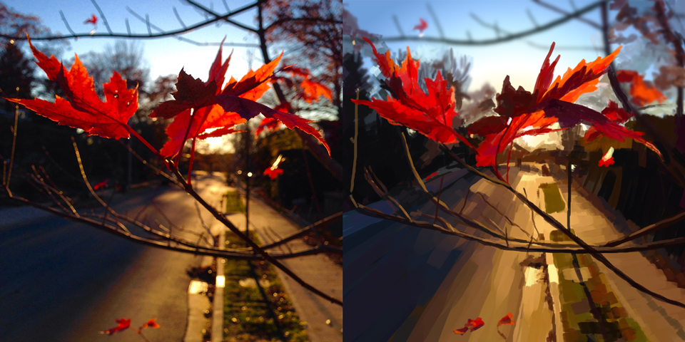

December 2015
Color and Light – Fall, Winter
Dane Aleksander—wildlife painter in Halifax, Nova Scotia.
This article is continued from Week 2: Summer. This third chapter and final update to the color and light series takes on a fall and winter theme, with paintings created in Photoshop and photos taken on my iPhone.
Fall (digital painting, 2015)
Acorn Season (digital painting, 2015)
Blue and Orange (digital painting, 2015)
Snow in the Dark (digital painting, 2015)

Snow in the Wind (digital painting, 2015)
Canadian Fall (digital painting, 2015)
An underlying drive for this series of quick studies was the development of a focused digital painting environment. In particular, this meant developing a familiarity with an accumulation of assorted digital brush presets. While the most important part of technique is not the tools that we use, digital or otherwise, this type of study can help to take advantage of the principles of color and light in any medium.